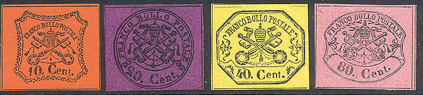
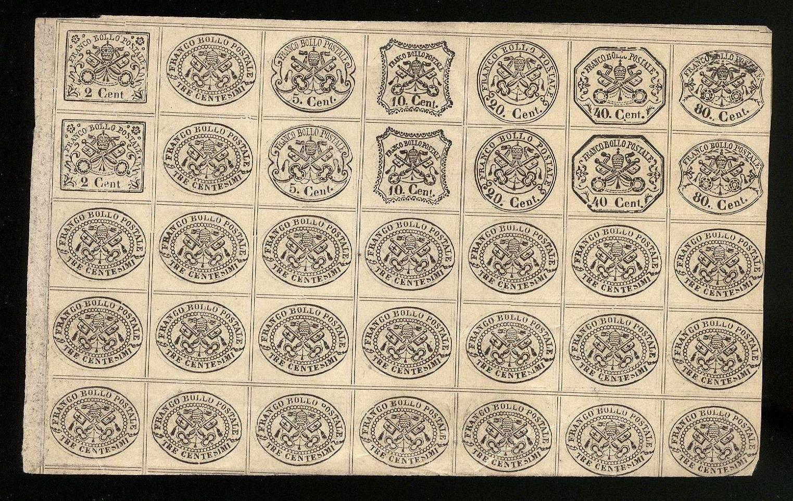

Return To Catalogue - Papal States, 1867 issue and Vatican - Italy
Note: on my website many of the
pictures can not be seen! They are of course present in the
catalogue;
contact me if you want to purchase the catalogue.
ATTENTION: most of the centesimi stamps of the
Papal States have been reprinted in large quantities. They are
very hard to distinguish from original stamps. The only easiest
way to distinguish them seems to exist for perforated stamps
(imperforate reprints are very difficult to distinguish from
genuine stamps): genuine perforated centesimi stamps should have
the perforation 13 1/4 (irregularly). These
reprints are almost worthless and can still be found in large
quantities today. Unofficial reprints were made by:
Usigli (1878) 2, 3, 30, 40 and 80
c (thick paper, colours different and different gum), imperforate
or perforated 11 1/2 or 12. He also made essay-strips with all
values together on one sheet (thus also creating stamps with
background colour different from the genuine stamps), for an
example see: 'Philatelic Forgers Their Lives and Works' by Varro
E. Tyler, page 53, or later in this document.
Moens (Brussels, 1889): All values,
imperforate or perforated 12
Gelli&Tani (Brussels) (Giulio Cesare Bonasi?):
All values, some different colours, perforated 11 1/2 to 13 (very
regularly)
David Cohn (1890):All values (with or without gum),
shining paper, imperforate or perforated 11 1/2, printed in
enormous quantities, these are the most common reprints.
According to http://www.vaticanphilately.org/rs.htm, most reprints (except Usigli) have horizontal dividing lines that interrupt the vertical and by their incorrect perforation. Genuine stamps and Usigli reprints have continuous horizontal lines. Usigli reprints can be distinguished by color, paper and gum. The gum of the originals is irregular and has tiny cracks. Reprints have smooth gum (usually yellow in colour).
I've been told that the next stamps are Gelli and Tani reprints:

I've been told that the next two stamps of 40 c are Cohn reprints:

Cohn reprints

A tete-beche reprint of the 3 c value
Usigli made 'essay strips' with different stamps in rows of seven stamps after he obtained the original printing plates. He also made these essays in colours that were not used for the genuine stamps. The next strips are probably such 'essays', they resemble exactly the strips shown in 'Philatelic Forgers, their Lives and Works' by V.E.Tyler:

The next sheet of different stamps in black on white could also be one of Usigli's 'essay strips'. However, it does not resemble the 'essay strip' shown in 'Philatelic Forgers, Their Lives and Works' by V.E.Tyler:
Usigli reprints:
Usigli reprints
Cohn reprints:
Cohn reprints
Gelli and Tani reprints:
Gelli and Tani reprints
Moens reprints:
Moens reprints.

Unissued tete-beche reprints and reprints with missing stamps.
Reprints were even used to print menucards in 1909.....
A description of how to detect the forgeries and
reprints can be found in the books:
1) 'Roman States forgeries - the issue of 1852' by Frederik J.
Levitsky;
2) 'Roman States forgeries - the issue of 1867-68' by Frederik J.
Levitsky and Rev. Floyd A. Jenkins;
3) 'Roman States essays and reprints - the issue of 1867-70' by
Rev. Floyd A. Jenkins.
These books are published by Triad Publications 30 Drabbington
way, Weston, Ma 02193 USA (with thanks to Lorenzo who passed this
information to me). These books are quite helpful to distinguish
forgeries (though some pictures of the forgeries are rather
unclear). I haven't read the third book.